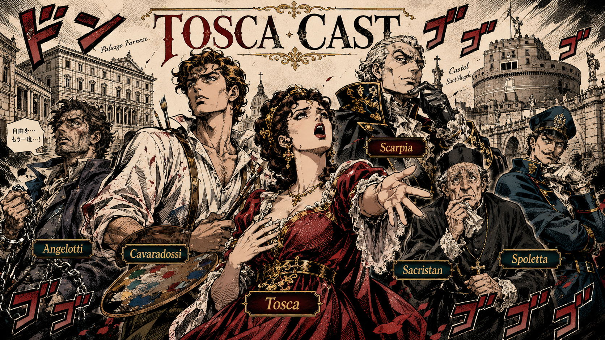
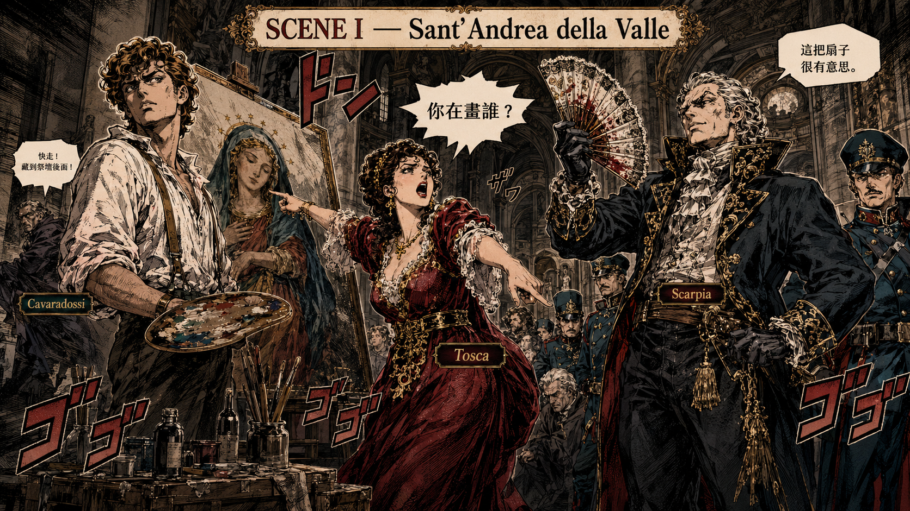
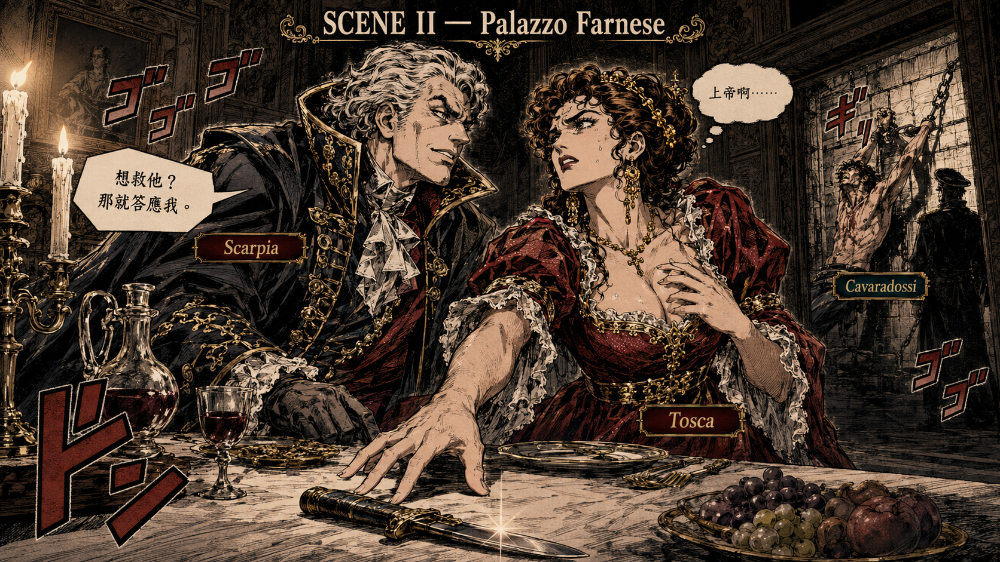

托斯卡 Tosca
羅馬當紅歌劇女名伶，極度虔誠，也極度善妒。她的邏輯很清楚：我不只在舞台上戲多，我在現實生活中戲更多。
《托斯卡》：普契尼的羅馬旅遊死亡指南，三個景點、三具人生碎片，以及最後一跳。
各位客官，小弟是個假義大利人，每年都想去羅馬住一個月。既然如此，我們今天就來聊聊普契尼的羅馬旅遊死亡指南——《托斯卡》Tosca。
如果說之前的歌劇是八點檔，那《托斯卡》就是好萊塢等級的動作驚悚片。這裡有越獄、政治迫害、性騷擾、謀殺、詐騙，還有最後的高空彈跳。
這部戲基本上就是告訴你：在羅馬，別隨便跟藝術家談戀愛，很容易死於非命；更不要相信警察局長，尤其是那種吃晚餐時還能聽人被拷問的警察局長。

羅馬當紅歌劇女名伶，極度虔誠，也極度善妒。她的邏輯很清楚：我不只在舞台上戲多，我在現實生活中戲更多。
男主角，畫家，革命同情者。帥氣、有理想、有才華，但政治敏感度約等於零，遇到危險還會忍不住喊口號。
羅馬警視總監，變態、好色、虐待狂。歌劇史上最讓人想衝上台揍他的反派之一。
政治犯，開場越獄成功後躲進教堂。他本人戲份不算多，但足以把所有人的人生一起拖進深淵。
教堂裡的碎念擔當，負責把神聖空間變得很有人間煙火味。基本上是羅馬版廟公。
斯卡皮亞的手下，執行力很高，道德感很低。每次出現都表示事情正往壞方向發展。
故事從一個逃犯躲進教堂開始。安傑洛蒂剛越獄，慌慌張張鑽進聖安德烈教堂。另一邊，我們的畫家男主角卡瓦拉多西正在畫聖母像，畫得很認真，政治危機完全沒有打擾他的藝術人生。
這時，托斯卡登場了。她一進來不是關心男友工作累不累，而是盯著那幅畫大叫：「這聖母的眼睛為什麼是藍色的？我是黑眼睛！你在畫誰？你是不是外面有女人？」
卡瓦拉多西只好邊哄邊改：「好好好，我把眼睛塗黑，妳最美，全羅馬妳最美。」托斯卡這才滿意離開。
接著，大反派斯卡皮亞帶著秘密警察登場。他發現逃犯妹妹留下的扇子，立刻啟動職場高階陰謀模式：拿扇子去刺激托斯卡的嫉妒心。
托斯卡氣沖沖跑去追查。斯卡皮亞看著她崩潰的背影，心裡暗爽。背景響起宏大的 Te Deum 感恩讚美詩，但他在神聖的教堂裡想的不是上帝，而是：「我要殺了那個畫家，然後佔有這個女人。」

第二景是整部歌劇的精華，堪稱「職場性騷擾與正當防衛示範教學」。地點來到法爾內塞宮，斯卡皮亞一邊吃晚餐，一邊在隔壁房間對卡瓦拉多西上酷刑。
托斯卡聽著男友的慘叫聲，崩潰了，只好供出逃犯藏身處。畫家被拖出來後，發現女友出賣了隊友，氣得大罵。
這時傳來拿破崙打贏的消息，卡瓦拉多西一時嘴快喊出：「Vittoria! 暴政必亡！」斯卡皮亞表示：「很好，拖下去槍斃。」各位看到沒有，政治敏感度為零就是這樣。
現在房間只剩斯卡皮亞和托斯卡。斯卡皮亞攤牌：「想救男友？可以。我也不是什麼惡魔，只要妳今晚陪我睡一覺，我就給妳通行證，並且安排一場假處決。」
托斯卡痛苦地唱出名曲 《為藝術，為愛情》Vissi d'arte：「上帝啊，我一輩子拜拜、做善事，為什麼你這樣對我？」上帝在此處呈現已讀不回狀態。
她拿起刀，直接往斯卡皮亞胸口捅下去：「這就是托斯卡之吻！」斯卡皮亞死透了。托斯卡看著屍體，冷冷地說：「全羅馬曾經都在這個人面前顫抖。」然後很有儀式感地在屍體兩旁點蠟燭、放十字架，才轉身離開。

黎明時分，卡瓦拉多西在聖天使城堡等待行刑。他唱出名曲 《星光燦爛》E lucevan le stelle，回憶與托斯卡的甜蜜時光。這種時候回憶戀愛，通常代表劇情快要沒有未來了。
托斯卡衝進來：「親愛的！搞定了！我殺了斯卡皮亞。順便說一下，我真的很會殺。他給了假處決命令，待會士兵開槍，你就假裝倒下，演得像一點。等他們走了，我們就私奔去海邊。」
卡瓦拉多西：「哇，妳真棒。演技指導是吧？沒問題。」行刑隊來了。「預備——放！」砰！砰！砰！畫家應聲倒地。托斯卡在一旁讚嘆：「哇！這跌得太逼真了！奧斯卡影帝啊！」
原來斯卡皮亞這個老狐狸，死前開的根本是真處決令。他就算死了，也要拖人下水。這時警察發現斯卡皮亞被殺，衝上來抓人。托斯卡無路可逃，衝上城堡城牆，對天空大喊：「Scarpia，我們上帝面前見！」然後縱身一跳。
說書人總結：《托斯卡》教我們三件事
《Tosca》提醒我們：羅馬很美，但如果你的旅伴是畫家、反派是警察局長、行程含聖天使城堡黎明場，請立刻改訂佛羅倫斯。